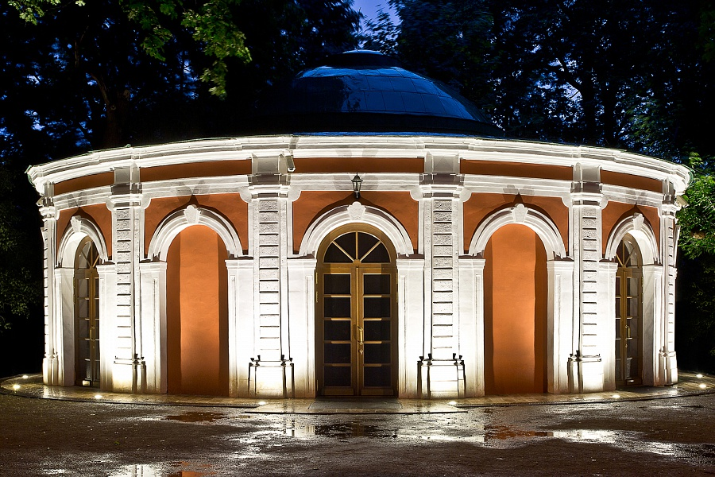

Неску́чный сад
Неску́чный сад — крупнейший пейзажный парк в историческом центре Москвы на правом берегу Москвы-реки, сохранившийся от дворянской усадьбы Нескучное. В первой трети XIX века парк был образован после покупки дворцовым ведомством Николая I имений князей Трубецких, Голицыных и Орловых. Сад площадью 59,3 га является частью Парка культуры и отдыха имени Горького, представляет собой памятник садово-паркового искусства, охраняется государством.
В настоящее время Нескучный сад составляет историческую часть парка Горького. В саду проложены аллеи для прогулок, оборудованы площадки для игры в теннис, футбольное поле, работает шахматный клуб, тренажёрный центр и коворкинг «Рабочая станция». В Охотничьем домике с 1990-х годов проводятся съёмки игры «Что? Где? Когда?».
В 1990-е Нескучный сад был традиционным местом сбора — «Эгладором» — толкинистов (поклонников книг Джона Толкина) и ролевиков фэнтези. С начала XXI века фанаты стали встречаться реже.
В декабре 2017 года распоряжением Департамента культурного наследия Москвы ансамбль «Усадьба „Нескучное“, конец XVIII в. — начало XIX в.: Садово-парковые сооружения, конец XVIII в.: летний домик у реки Москвы, Ванный домик у пруда, Охотничий домик у оврага, три садовых мостика, грот» был взят под охрану как объект культурного наследия.